창호종합기계CHANGHO INC
207. AL 늘링기 · 롤러프레스기
055-327-4112
CNC Thermal Break Line
단열 프로파일 CNC 자동 라인 3공정
CNC KNURLING · ROLLING PRESS · TRANSFER LINE
롤렛 가공 → 롤링 압착 → 자동 이송, 세 공정으로 이어지는 라인입니다. 첫 번째 공정이 프로파일 홈 안쪽에 결합면을 내고 단열 스트립을 끼우면, 두 번째 공정이 그 스트립을 눌러 붙입니다. 세 번째 공정인 이송 테이블이 앞의 두 공정을 하나로 묶어 공정 사이 대기 시간과 사람 손을 줄입니다. 네 기종 모두 380V 50Hz 3상 전원에 서보 제어를 쓰며, 대만 HIWIN 리니어 가이드와 슈나이더 전장을 공통으로 채택했습니다.
3공정 · 4기종380V / 50Hz6 ~ 60 m/min
사양 확인 · 제작 문의Line Composition
라인 구성 — 3공정 4기종
소재가 지나가는 순서입니다. 두 번째 공정은 프로파일 단면 성격으로 고르시면 됩니다 — 이형·비대칭 단면이면 RP17, 대량·중량형이면 RP14 입니다. 필요한 공정만 골라 구성하셔도 됩니다.
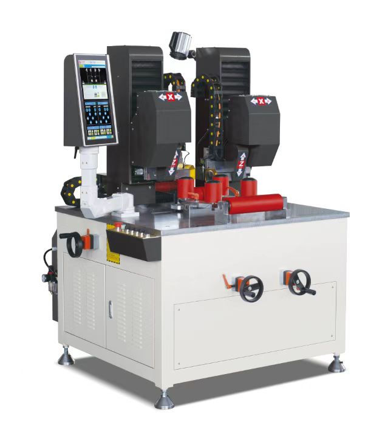
① 롤렛 · 스트립 삽입
CNC 6축 롤렛 및 스트립 삽입기
WTM-KF6-CNC · 롤렛 휠 Φ80 · 6~60 m/min
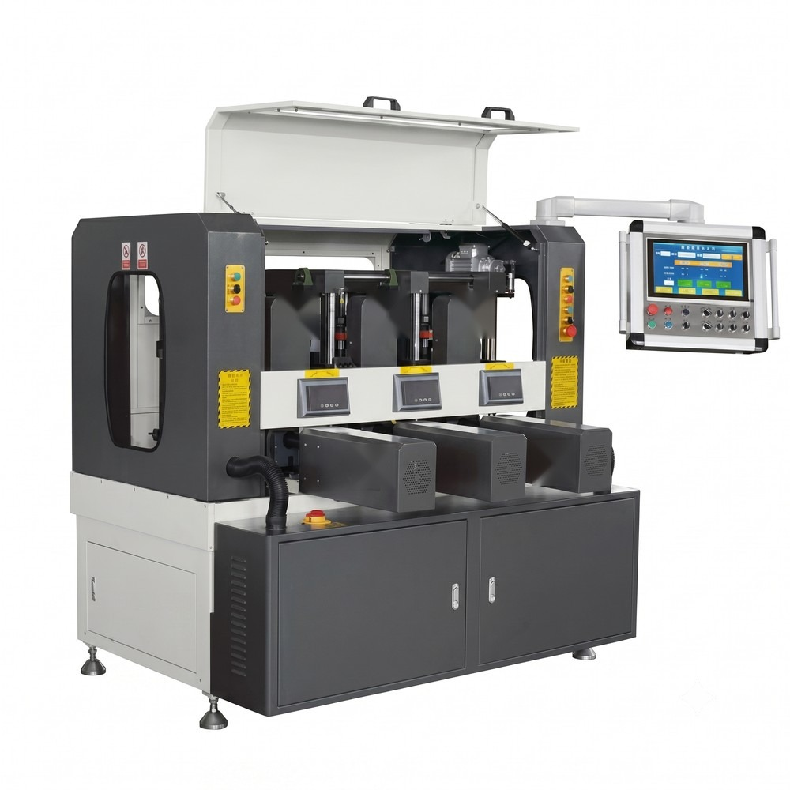
② 롤링 압착 — 두 기종 중 선택
기본 WTM-RP17-CNC · 이형·비대칭 3축 대응 · 13.5 kW
중량형 WTM-RP14-CNC · 경화 롤링디스크 6조 · 11.5 kW
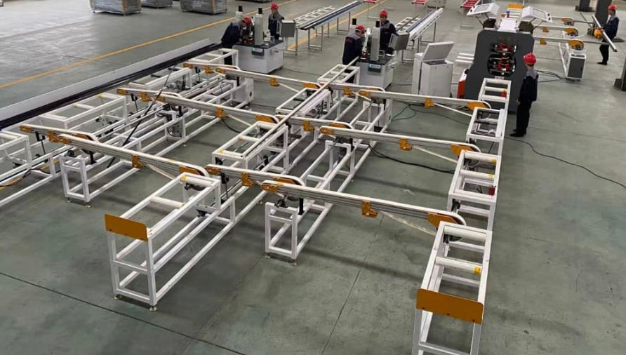
③ 라인 이송
CNC 자동 이송 테이블 라인
WTM-TFL-CNC · 구간 모듈 1,000 mm 연동
① 롤렛 · 스트립 삽입 · WTM-KF6-CNC
CNC 6축 롤렛 및 스트립 삽입기
CNC Knurling and Strip Feeding Machine
01
풀 서보 구동 — 형상 변경 시 빠른 세팅롤렛 가공과 고무 슬롯 이동이 전부 서보로 제어돼 프로파일이 바뀌어도 세팅이 쉽고 안정적입니다.
02
롤렛 가공 + 스트립 삽입 동시 처리필름 코팅용 지지 프레임과 클램핑 장치가 달려 있어 롤렛 가공과 단열 스트립 삽입을 한 번에 끝냅니다.
03
독립형 헤드 제어 · 고품질 핵심 부품2개 롤렛 헤드를 개별 모터와 핸드휠로 정밀 수직 제어하며, 대만 HIWIN 리니어 레일과 슈나이더 전장을 씁니다.
| 전원 공급 | 380V / 50Hz |
|---|
| 총 소비 전력 | 4.0 kW |
|---|
| 롤렛 휠 직경 | 80 mm |
|---|
| 롤렛 휠 간격 | 10 - 240 mm |
|---|
| 가공 가능 높이 | 0 - 260 mm |
|---|
| 최대 프로파일 단면 | 340 x 260 mm |
|---|
| 공급 공압 | 0.6 - 0.8 MPa |
|---|
| 롤렛 가공 속도 | 6 - 60 m/min (가변) |
|---|
| 장비 외형 크기 | 1,400 x 1,300 x 1,650 mm |
|---|
| 장비 중량 | 700 kg |
|---|
| 정밀 조절 | 칼날 상하 0-250mm · 좌우 0-125mm / 롤러 상하 0-50mm · 좌우 0-125mm |
|---|
| 제품 상태 | 주문제작 |
|---|
Real Product
작동 장면 — 6축 롤렛 · 스트립 삽입
제품 사진이 없어 제조사 영상에서 뽑은 작동 장면입니다(원장 §B-5-a). 6축이 롤렛 가공과 스트립 삽입을 이어서 처리합니다.
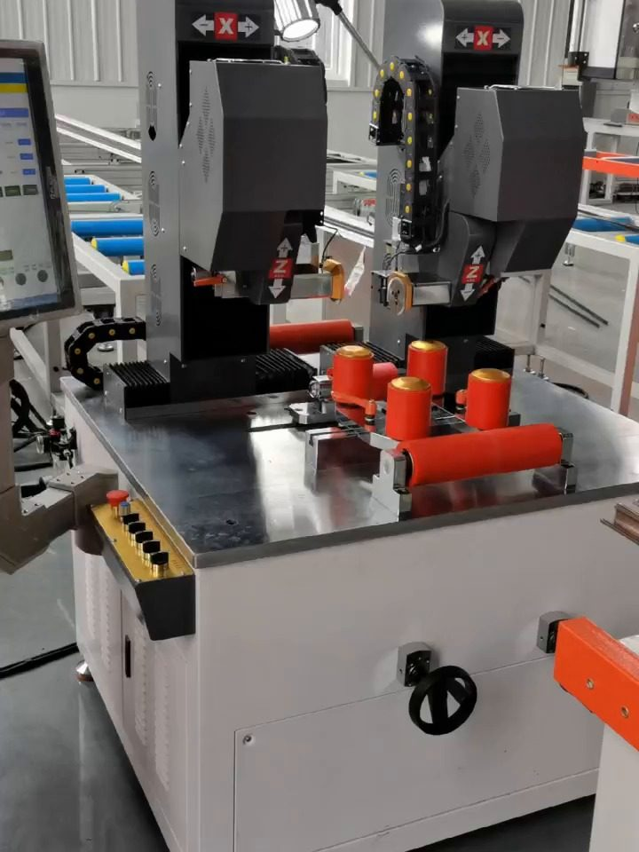
본체 전경 — 6축 헤드와 이송부
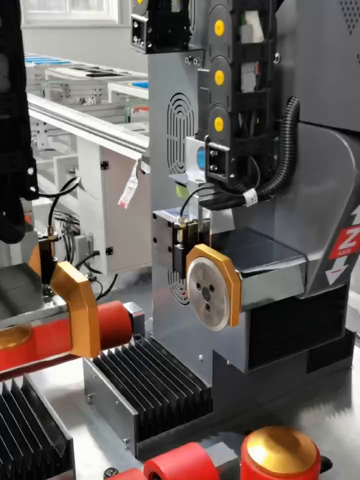
롤렛 헤드 하강 — 가공 위치 진입
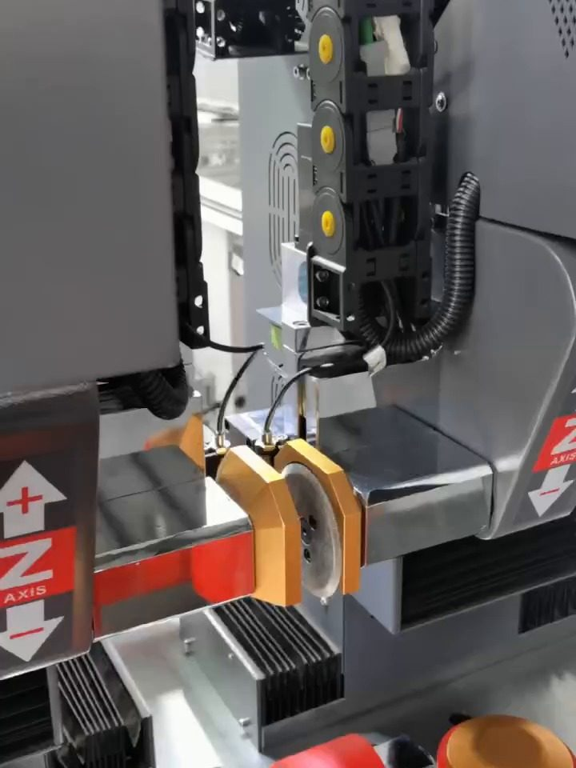
스트립 삽입부 — 압착 롤러 통과
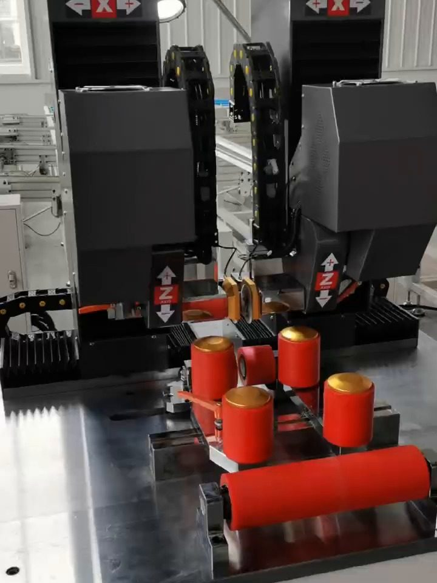
6축 동시 동작 — 상하 롤러 맞물림
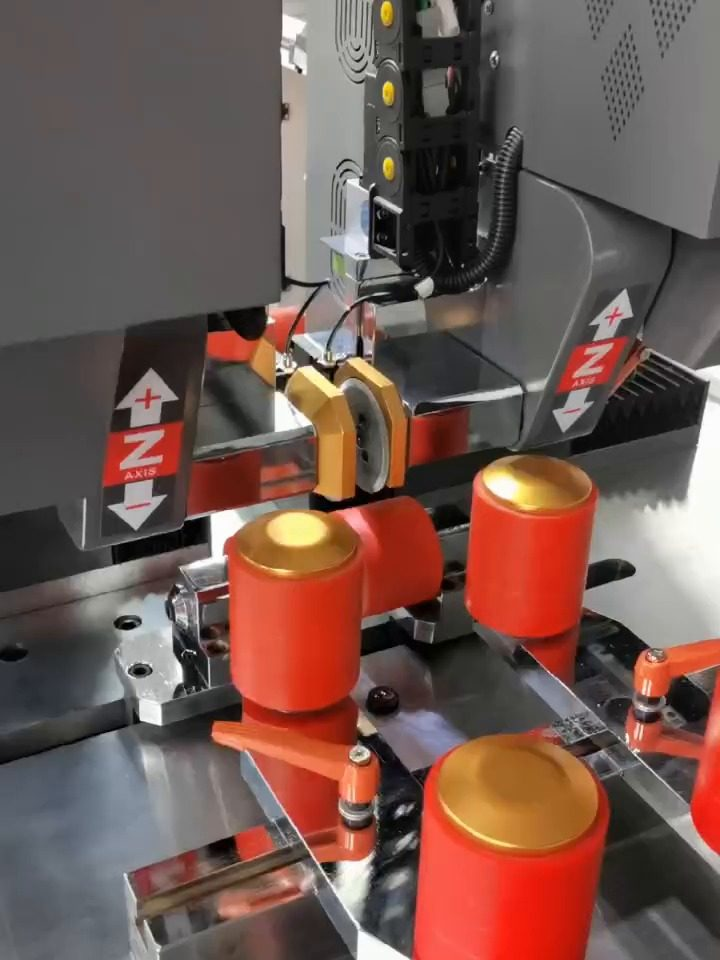
스트립 삽입 완료 구간
② 롤링 압착 (기본) · WTM-RP17-CNC
CNC 17축 롤링 프레스기
CNC Rolling Compound Machine WTM-RP17-CNC
01
이형 · 비대칭 프로파일 3축 제어상하가 어긋나거나 전후로 오프셋된 프로파일도 맞춤 칼날 교체 없이 그대로 처리합니다.
02
프로파일 직선도 교정 메커니즘세 번째 롤링 디스크 세트가 통째로 오르내리며 휘어진 프로파일의 수직도·평행도를 잡아 줍니다.
03
무단 속도 조절 · 고품질 구동계인버터 무단 변속으로 자재에 맞춰 속도를 조절하고, 대만 HIWIN 리니어 가이드와 슈나이더 전장을 씁니다.
| 전원 공급 | 380V / 50Hz |
|---|
| 총 소비 전력 | 13.5 kW |
|---|
| 제어 방식 | 17축 서보모터 제어 · 인버터 무단 변속 |
|---|
| 롤링 디스크 직경 | 260 mm |
|---|
| 공급 공압 | 0.6 - 0.8 MPa |
|---|
| 롤링 디스크 쌍 간격 | 8 - 90 mm |
|---|
| 롤링 디스크 폭 간격 | 0 - 185 mm |
|---|
| 롤링 가공 속도 | 6 - 60 m/min (가변) |
|---|
| 장비 외형 크기 | 1,700 x 1,550 x 1,850 mm |
|---|
| 장비 중량 | 1,800 kg |
|---|
| 제품 상태 | 주문제작 |
|---|
Real Product
작동 장면 — 17축 롤링 프레스
제품 사진이 없어 제조사 영상에서 뽑은 작동 장면입니다(원장 §B-5-a). 17축이 프로파일 단면을 한 번에 압착합니다.
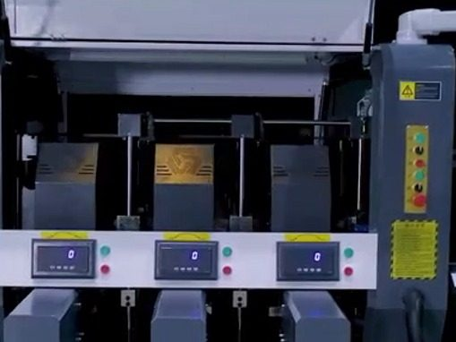
본체 전경 — 17축 헤드와 축별 표시기
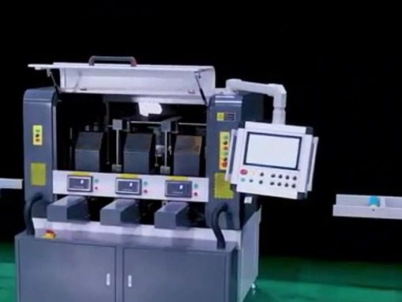
라인 배치 — 이송 테이블 연결
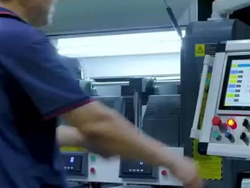
작업 중 — 조작부에서 축값 설정
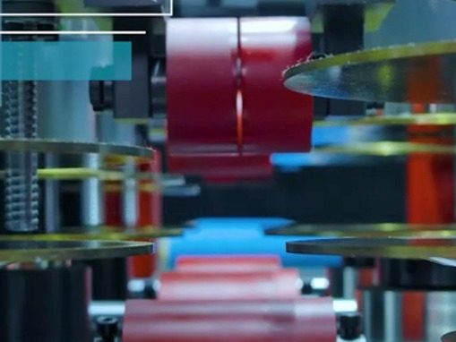
압착 롤러 통과 — 상하 스핀들과 롤링 디스크
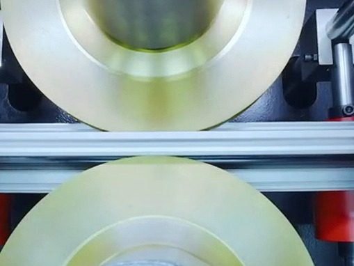
롤링 디스크 근접 — 황동 가이드 원반
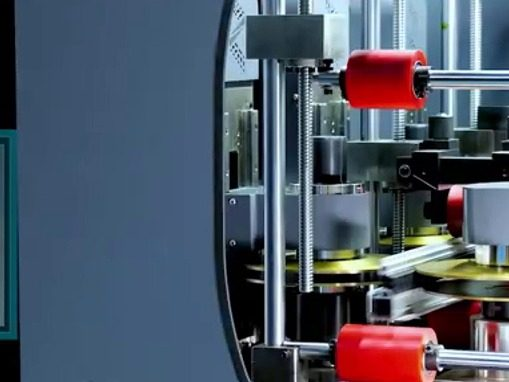
가공부 전경 — 위아래로 움직이는 스크류와 압착 롤러
② 롤링 압착 (중량형) · WTM-RP14-CNC
CNC 14축 롤링 프레스기
CNC Rolling Compound Machine WTM-RP14-CNC
01
빠른 프로파일 교체경화 처리된 롤링 디스크 6세트를 전기적으로 제어해 형상이 바뀌어도 빠르게 교체합니다.
02
정밀 조절 · 안정적 구동디스크 쌍마다 수직·수평 거리를 조절할 수 있어 여러 크기의 프로파일에 유연하게 대응합니다.
03
변형 교정 기능세 번째 디스크 쌍이 수직·수평으로 움직여 압착 중 틀어진 프로파일 위치를 바로잡습니다.
| 전원 공급 | 380V / 50Hz |
|---|
| 총 소비 전력 | 11.5 kW |
|---|
| 제어 방식 | 14축 서보모터 제어 · 무단 속도 조절 |
|---|
| 롤링 디스크 직경 | 260 mm |
|---|
| 공급 공압 | 0.6 - 0.8 MPa |
|---|
| 롤링 디스크 쌍 간격 | 8 - 90 mm |
|---|
| 롤링 디스크 폭 간격 | 0 - 185 mm |
|---|
| 롤링 가공 속도 | 6 - 60 m/min (가변) |
|---|
| 장비 외형 크기 | 1,700 x 1,550 x 1,850 mm |
|---|
| 장비 중량 | 1,600 kg |
|---|
| 기본 포함 | 바코드 프린터 · 스캐너 |
|---|
| 제품 상태 | 주문제작 |
|---|
Real Product
작동 장면 — 14축 롤링 프레스
제품 사진이 없어 제조사 영상에서 뽑은 작동 장면입니다(원장 §B-5-a). 14축 구성으로 자동 라인에 편성됩니다.
압착 롤러 통과 — 상하 스핀들과 롤링 디스크
가공부 전경 — 위아래로 움직이는 스크류와 압착 롤러
③ 라인 이송 · WTM-TFL-CNC
CNC 자동 이송 테이블 라인
CNC Automatic Transfer Table Line WTM-TFL-CNC
01
노동력 절감 스마트 이송프로파일 자재를 다음 공정으로 자동 이송해 수동 이송 시간과 인력 소요를 줄입니다.
02
라인 전체 연동 제어롤렛기·프레스기와 센서로 연동돼 자재 밀림 없이 생산 흐름을 이어 갑니다.
03
박스형 프레임 내구 설계축·커플링·베어링 연결부를 볼트 체결 구조로 마감해 고속 연속 구동에서도 진동을 흡수합니다.
| 원산지 | 국내산 (부품 일부 수입산) |
|---|
| 컨베이어 구간 모듈 길이 | 1,000.0 mm 부근 연동 구조 |
|---|
| 커플링 프레임 폭/길이 기준 | 약 1,220.0 mm 내외 |
|---|
| 베어링 연결 하우징 규격 | 약 460.0 mm 내외 |
|---|
| 프레임 베이스 하부 체결 | 1,000.0 mm 마킹 볼트 피치 |
|---|
| 제품 상태 | 주문제작 |
|---|
· 아래 항목은 현재 사내 자료에 수치가 없어 표기하지 않았습니다 — 사용전원 · 소비전력 · 장비 중량 · 장비 외형 크기 · 공급 공압. 필요하시면 확인해 드립니다.
Real Product
작동 장면 — 자동 이송 테이블 라인
제품 사진이 없어 제조사 라인 영상에서 뽑은 장면입니다(원장 §B-5-a). 이송 테이블이 가공 스테이션 사이를 이어 소재를 넘깁니다.
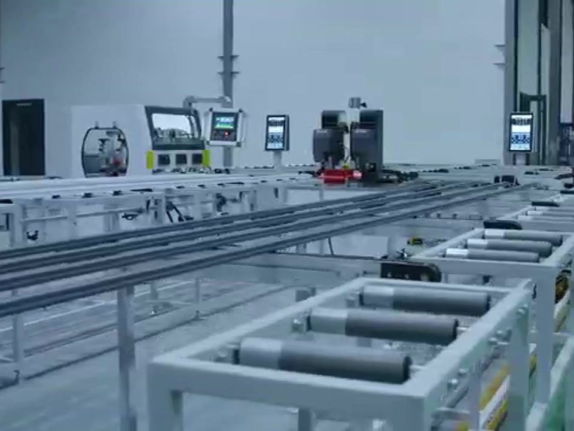
라인 전경 — 다열 이송 레일과 가공 스테이션
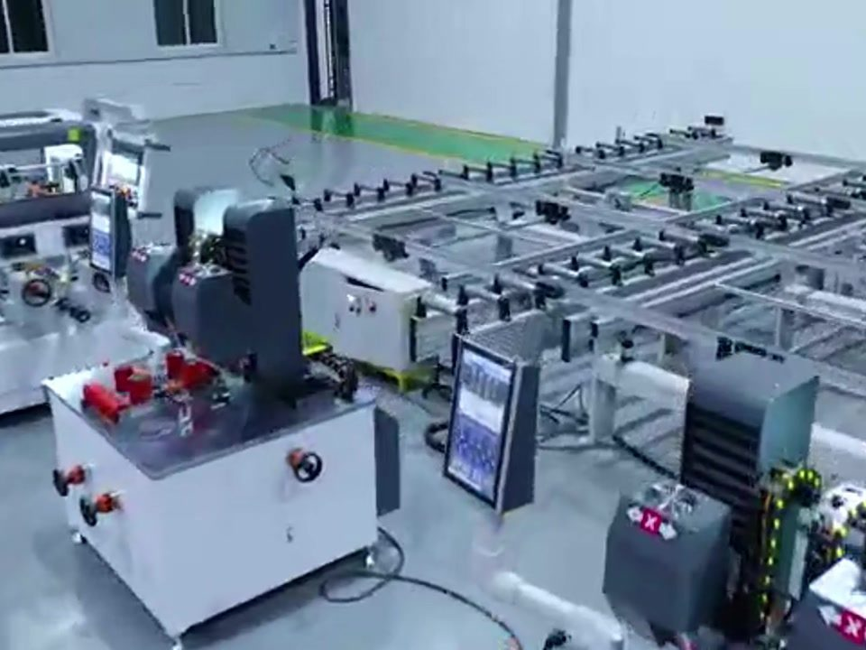
가공기와 이송 테이블 연결 배치
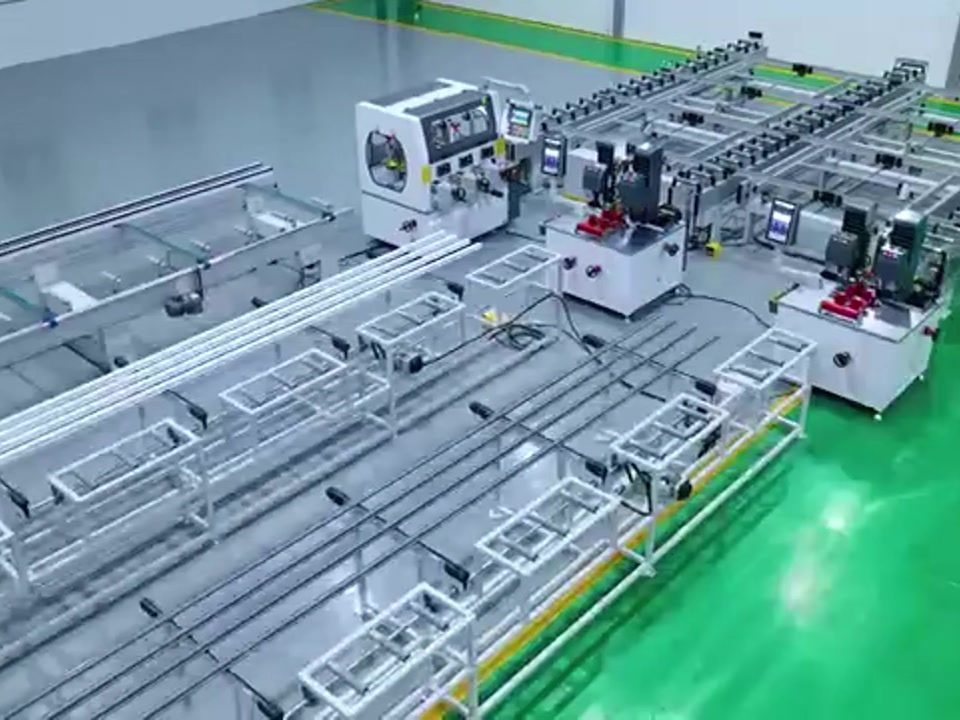
라인 편성 — 전후 공정을 잇는 이송 경로
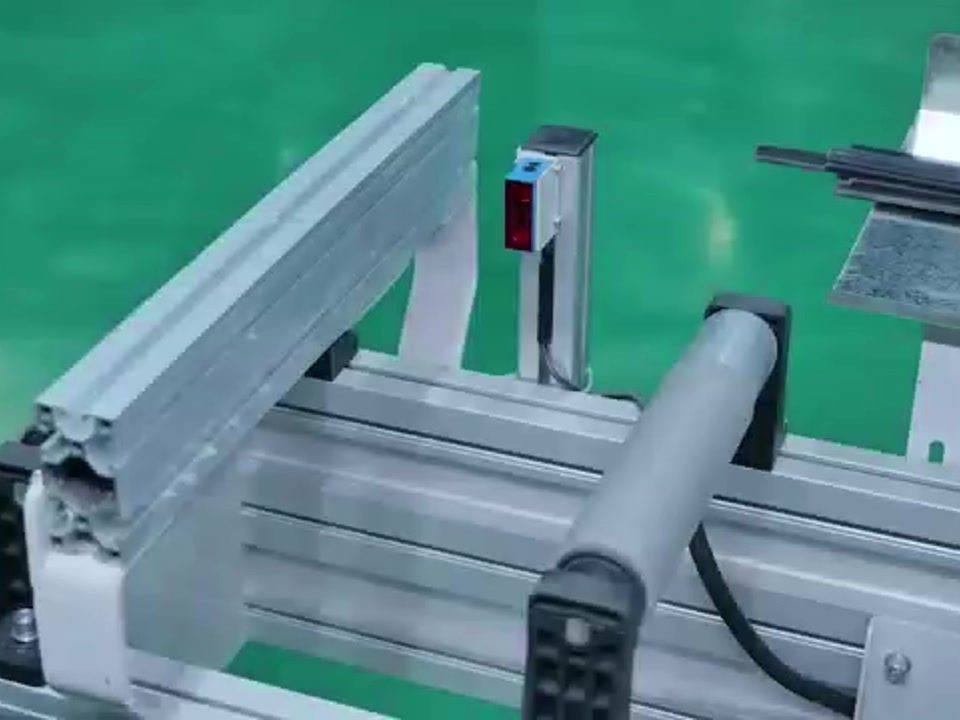
이송 레일 근접 — 알루미늄 프레임과 위치 센서
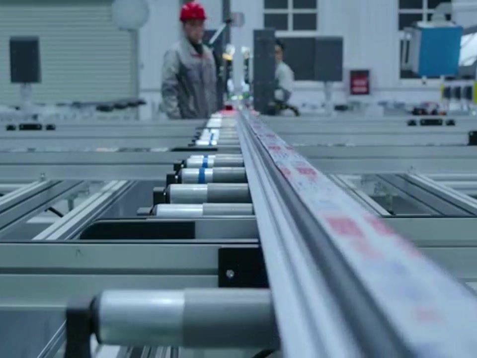
이송 중 — 롤러 위를 지나는 프로파일
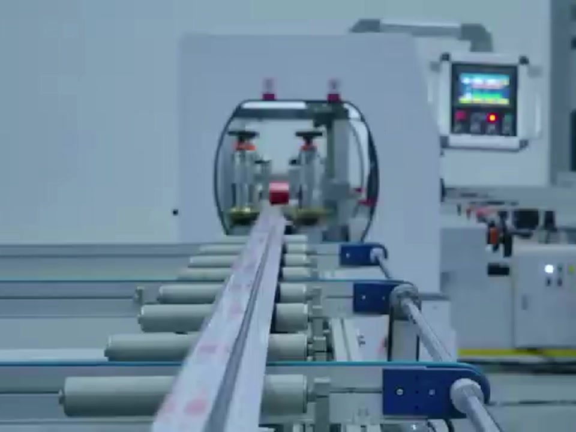
이송 게이트 통과 — 후공정 진입
Why it matters
세 공정을 센서로 연동해 라인 속도를 하나로 맞춥니다.
공정별로 기계를 따로 도입하시면 기계마다 이송 속도가 달라 중간 구간에서 자재가 밀립니다. 이 라인의 4기종은 6~60 m/min 범위를 함께 쓰고, 앞뒤 기계가 센서로 연동돼 다음 기계가 비었을 때 자재를 넘깁니다. 두 번째 공정은 프로파일 단면 성격에 따라 WTM-RP17-CNC와 WTM-RP14-CNC 중에서 고르시면 됩니다. 저희가 현장 라인 길이와 프로파일 단면을 확인해 구성안을 만들고, 시운전으로 연동 상태를 확인한 뒤 납품합니다.
Model Line-up
CNC 라인 3공정 4기종
공정으로 먼저 자리를 잡으시고, 두 번째 공정 안에서 단면 성격으로 기종을 고르십시오.
| # | 모델 | 공정 | 외형 · 출력 · 중량 |
|---|
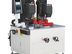 | 1 | WTM-KF6-CNC | ① 롤렛 · 스트립 삽입 | 1,400 × 1,300 × 1,650 mm · 4.0 kW · 700 kg |
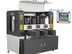 | 2 | WTM-RP17-CNC | ② 롤링 압착 (기본) | 1,700 × 1,550 × 1,850 mm · 13.5 kW · 1,800 kg |
| 3 | WTM-RP14-CNC | ② 롤링 압착 (중량형) | 1,700 × 1,550 × 1,850 mm · 11.5 kW · 1,600 kg |
| 4 | WTM-TFL-CNC | ③ 라인 이송 | 구간 모듈 1,000 mm 연동 · 라인 길이 협의 |
· 외형·중량은 본체 기준입니다. · 라인 구성과 설치 조건은 현장에 맞춰 협의합니다.
Order & Shipping
주문 · 출고 안내
사양 확인
가공하실 프로파일의 최대 단면과 라인 속도를 알려 주시면 맞는 기종을 골라 드립니다. 기존 라인에 붙이실 계획이면 앞뒤 공정까지 함께 봅니다.
라인 구성
널링 · 압연 · 자동 이송을 조합해 한 라인으로 받으실 수 있습니다. 필요한 공정만 골라 구성하셔도 됩니다.
전원 조건
이 계열 기종은 380V 3상 전원을 씁니다. 설치 현장의 수전 용량을 미리 확인해 주십시오.
주문 제작
CNC 라인 기종은 주문 제작입니다. 납기는 사양 확정 후 안내해 드립니다.
사전 시연
시연은 김해 전시장에서 진행합니다. 가공하실 프로파일을 직접 가져오셔도 됩니다. 방문 일정은 아래 채널로 미리 예약해 주십시오.
사후 관리
수리는 입고 처리합니다. 소모·수리 부품을 자체 보유해 부품 대기 없이 처리합니다.